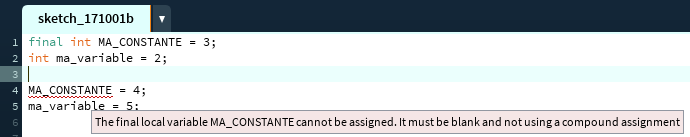
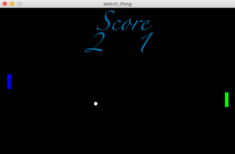
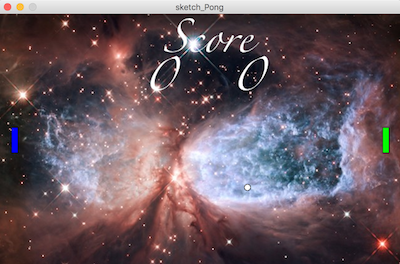
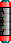
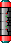
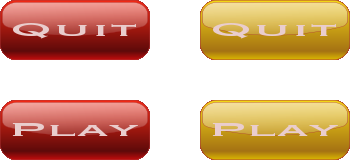

Projet Pong
Once Upon A Time Game Programming: Pong
Dans ce projet, vous allez mettre en pratique ce que vous avez vu en cours et TD d'AP1 -Algorithmique et Programmation 1er Semestre- : notions de variables, de fonctions, de paramètres, de structures de contrôle...
Vous allez réaliser un jeu Pong, avec une balle et deux raquettes. Au fil des fonctionnalités demandées dans le sujet, vous devrez réaliser des ateliers pour découvrir ou compléter des connaissances en Processing ou algorithmique : Comment structurer son code avec des objets ? Comment bien documenter un code ? Comment gérer les événements clavier ? Comment charger une image ? Comment gérer la collision de deux rectangles ? etc
Ayez confiance en vous et bossez DUR.
À vous de jouer, créez votre jeu Pong !

1. Coder avec des Classes
Au début de cette séance, un petit cours sur les classes vous a été présenté, n'hésitez pas à vous y référer. Votre projet va utiliser quelques (petites) classes pour faciliter la transmission de paramètres.
Avant de commencer, copiez et ouvrez ce sketch Processing.
En l'état, il affiche deux rectangles ; il doit permettre de sélectionner l'un de ces deux rectangles (un premier clic) et le déplacer (second clic en dehors du rectangle), ou de le redimensionner (second clic en-dehors du rectangle). On pourrait stocker huit variables globales (position en abscisse et ordonnée, dimensions en largeur et hauteur, pour deux rectangles), les manipuler et les tester pour arriver au résulat voulu... Nous voulons simplifier ces traitements. Observez dans le code :
- la classe Rectangle :
/** * Rectangle avec couleur. */ class Rectangle { int x; int y; int largeur; int hauteur; color col; } - l'initialisation d'un rectangle :
/** * Initialiser un rectangle. */ Rectangle initRectangle(int lx, int ly, int la, int ha, color c) { Rectangle rect = new Rectangle(); rect.x = lx; rect.y = ly; rect.largeur = la; rect.hauteur = ha; rect.col = c; return rect; } - des exemples d'action sur un rectangle : déplacer (son coin supérieur gauche), afficher (suivant une certaine couleur
s'il est sélectionné ou sa couleur sinon)
/** * Modifie la position d'un rectangle. * * @param x destination-x * @param y destination-y * @param r rectangle */ void bouger(int x, int y, Rectangle r) { r.x = x; r.y = y; } /** * Dessine un rectangle. * * @param r rectangle */ void dessiner(Rectangle r) { if (souris && r.col == rSelect.col){ fill(BRIGHT_BLUE); } else { fill(r.col); } rect(r.x, r.y, r.largeur, r.hauteur); } - la déclaration (portée globale) et l'initialisation (méthode
setup()
) des deux rectanglesRectangle rVert, rOrange, rSelect; void setup() { size(640, 480); rVert = initRectangle(10, 20, 60, 80, SEMI_GREEN); rOrange = initRectangle(200, 250, 300, 120, MOSTLY_ORANGE); } - l'utilisation des rectangles dans le code : à tout instant, il suffit de les dessiner de la manière appropriée
(l'action
dessiner()
s'en occupera)void draw() { background(0); dessiner(rVert); dessiner(rOrange); }
Pour que ce programme fonctionne, il lui suffit d'une fonctionnalité : savoir si un point est ou non dans un rectangle. Il n'y a qu'une ligne à changer...
Corrigez la fonction
estDans()et vérifiez votre programme.
/**
* Appartenance d'un point a un rectangle.
*
* @param x abscisse
* @param y ordonnee
* @param r rectangle
* @return true ssi (x, y) dans r (frontière incluse)
*/
boolean estDans(int x, int y, Rectangle r) {
// A FAIRE
return false;
}
Quand vous êtes prêt, préparez-vous à passer aux choses sérieuses...
Sujet - Cahier des charges
2. Prise en main du code fourni et Correction
Le sketch Processing fourni ici contient du code qui :
- gère les rebonds d'une balle sur le bord de l'écran (comme dans un des mini-projets),
- contient un onglet Ball avec le code qui gère la balle,
- contient un onglet Racket avec du code incomplet pour les raquettes : on ne l'utilisera pas tout de suite,
- contient un onglet Utils avec des fonctions utilitaires, notamment
collision()
: on ne l'utilisera pas tout de suite non plus.
Remarquez les lignes tout en haut de chaque fichier commençant par le mot-clef "final", comme :
final color NOIR = color(0);. Final indique que la variable est constante (si plus loin dans le code vous tentez de la modifier ça ne compilera pas). On peut facilement tester l'effet de
final: 
Désormais en Processing nous déclarerons toujours les constantes avec "final" et les nommerons avec des majuscules.
La gestion de la collision sur les bords n'est pas tout à fait correcte :
- Augmentez la largeur de la balle (constante
BALL_WIDTH
) pour mieux voir l'erreur à l'exécution. - Identifiez le problème et corrigez le code.
3. Documentation
Vous allez commencer à prendre de bonnes habitudes de développeur. Un code est destiné à être réutilisé/relu/modifié. Il est donc important de bien le documenter. Cela ne se fait pas n'importe comment. En Java, on utilise la Javadoc.
/**
* Avant chaque fonction on peut écrire un petit texte
* explicatif sous la forme de commentaires.
* Attention aux deux étoiles sur la première ligne.
* Ensuite on utilise des tags de Javadoc pour donner
* des informations diverses.
*
* A minima dans ce projet vous devez utiliser les tags :
*
* @param val le ou les paramètres de la fonction
* @return la valeur retournée
* @author l'auteur de la fonction
*/
int maFonction(int val) {
return 0;
}
Pour générer les pages de documentation pour votre code Pong, suivez ces étapes :
- dans Processing, il faut générer le code Java de votre sketch :
- faîtes Fichier / Exporter, cochez "Linux" et décochez "Embed Java"
- ouvrez un terminal dans le répertoire de votre sketchbook, et exécutez :
- mkdir doc (la première fois)
- javadoc -d ./doc -docencoding "iso-8859-1" application.linux64/source/sketch_Pong.java
- la page de documentation est doc/index.html depuis votre sketchbook (à ouvrir dans votre navigateur)
À vous de jouer :
- Regardez la fonction
collision
et sa partie documentation. - Inspirez-vous en pour compléter la documentation des fonctions du code fourni.
- Par la suite, vous documenterez TOUTES les fonctions et classes que vous écrirez.
4. Affichage des deux raquettes
On veut afficher une raquette bleue à gauche et une raquette verte à droite, pour l'instant immobiles.
- Une raquette se définit comme un rectangle de couleur pré-définie et dont le coin haut gauche est positionné aux coordonnées (x,y). Créez la classe correspondante.
- Créez le constructeur permettant d'initialiser une raquette.
- Créez la fonction
showRacket
permettant d'afficher une raquette sous la forme d'un rectangle de couleur sur l'écran. - Appelez correctement ces fonctions depuis l'onglet principal pour réaliser l'affichage des deux raquettes comme sur l'image ci-dessous (pour cela il faut créer les raquettes, les initialiser et gérer leur affichage).
5. Déplacement des deux raquettes
Recopiez le code ci-dessous dans un projet à part et exécutez-le. En analysant le code, trouvez les touches permettant de faire bouger le cercle.
Ensuite décommentez les lignes 31 à 47 tout en commentant les lignes 15 à 29. Quelle différence observez-vous entre les deux systèmes de gestion des évènements clavier par Processing ?
int x;
void setup()
{
size(640, 400);
x = width/2;
}
void draw()
{
background(0);
fill(255);
ellipse(x, height/2, 30, 30);
if (keyPressed)
{
switch (key)
{
case 'a' :
x -= 5;
break;
case 'z' :
x += 5;
break;
default :
println("erreur");
break;
}
}
}
/*
void keyPressed()
{
switch (key)
{
case 'a' :
x -= 5;
break;
case 'z' :
x += 5;
break;
default :
println("erreur");
break;
}
}
*/
- Créez les fonctions
moveRacketUp
etmoveRacketDown
permettant respectivement de faire bouger vers le haut (vers le bas) une raquette passée en paramètre. - Dans le fichier principal créez la fonction
void gestionClavierDepuisDraw()
réalisant le testif (keyPressed)
et déplace les raquettes en fonction des touches pressées. Cette fonction est appelée depuis la fonctiondraw()
.
6. Mise en pause du jeu
En utilisant cette fois-ci la fonction Processing
keyPressed(), faîtes en sorte que :
- Quand on appuie sur la touche Espace, le jeu se met en pause.
- Quand on appuie de nouveau, le jeu redémarre.
- Vous utiliserez les fonctions
loop()
etnoLoop()
de Processing.
7. Gestion de la collision entre la balle et les raquettes
- Étudiez la fonction
collision()
qui gère l'intersection de deux rectangles pour traiter les collisions de la balle avec les raquettes. - Modifiez
boolean collisionHorizontale(Ball b)
etboolean collisionVerticale(Ball b)
afin que ces deux fonctions prennent maintenant en compte les deux raquettes présentes sur l'espace de jeu.
8. Gestion du score
L'objectif maintenant est de pouvoir compter les points.
A chaque fois que la balle touche un bord vertical (gauche ou droit) :
- le joueur opposé marque un point,
- le score se met à jour,
- le jeu reprend avec la balle au milieu.
Pour cela il vous faudra
- trouver un moyen d'intégrer dans votre conception la gestion des points (variables globales ? attribut de classe ? ...)
- créer la fonction
point
qui vérifie la position de la balle et ajoute un point au joueur 1 si la balle sort par la droite, ou au joueur 2 si la balle sort par la gauche.
La vidéo ci-dessous illustre ce que doit donner votre code après cette étape.
9. Fontes
Nous allons maintenant styliser légèrement le texte qui s'affiche (score). Pour cela commencez par regarder la documentation de loadFont().
Pour créer une fonte, rien de plus simple. Allez dans le menu "outils/générer-la-police". Sélectionnez une fonte puis générez-la pour Processing (bouton OK). Cela génère dans votre espace de travail un répertoire data contenant cette fonte au format "vlw" compatible avec Processing.
Si tout marche bien, le texte est maintenant stylisé comme sur l'image ci-dessous.

10. Images
Après avoir étudié la documentation de loadImage() et celle de background(), faîtes en sorte que votre zone de jeu contienne une image de fond comme sur l'image ci-dessous.

Plutôt que d'utiliser des rectangles pour visualiser la balle et les rectangles, je vous propose d'utiliser des sprites. Les images ci-dessous correspondent aux sprites des raquettes et de la balle. Ces images sont au format png et contiennent une couche alpha qui apparaitra de manière transparente sur la fenêtre de Processing.


Enregistrez ces images dans votre espace de travail.
Vous avez un choix de conception à faire ici pour "gérer" les sprites (variables globales ? nouveau fichier ? attribut de classe ?).
La vidéo ci-dessous illustre le résultat attendu.
11. Menu de jeu
Ajoutez un menu de jeu qui s'affiche avant le jeu en lui-même. Comme sur la vidéo ci-dessous, il faut que lorsque la souris est positionnée sur le bouton, celui-ci change de couleur.

Vous utiliserez le sprite fourni ci-dessus. Consultez la documentation de la fonction copy() afin d'afficher les sprites. Nous utiliserons en particulier la forme copy(src, sx, sy, sw, sh, dx, dy, dw, dh) qui prend la zone de l'image src désignée par (sx, sy, sw, sh) et l'affiche dans la zone de la fenêtre désignée par (dx, dy, dw, dh).
Lorsque l'on presse la souris et qu'elle est placée sur le bouton, le jeu se lance.
Vous avez un choix de conception à faire ici pour "gérer" le menu, les boutons qui changent de couleur (variables globales ? nouveau fichier ? attribut de classe ?).
12. Quelques extensions possibles
S'il vous reste du temps, vous pouvez :
- Ajouter un bouton "Quitter" sur le menu.
- Obstacles : ajouter aléatoirement des obstacles au milieu du terrain, qui font rebondir la balle.
- Téléportation : ajouter aléatoirement des paires de rectangles (entrée, sortie) numérotées telles que si la balle entre dans l'entrée numéro n, elle ressort aussitôt par la sortie numéro n.
- Jouez à plusieurs balles.
- Le nombre de joueurs peut varier de 2 à 4 (choix dans le menu).
- Ajoutez un facteur d'accélération pour simuler la gravité.